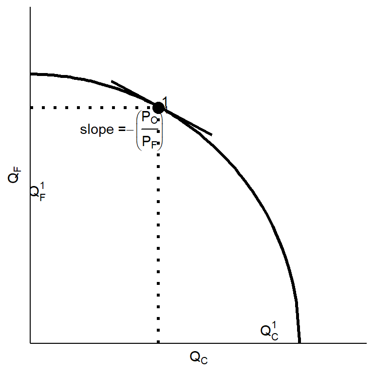
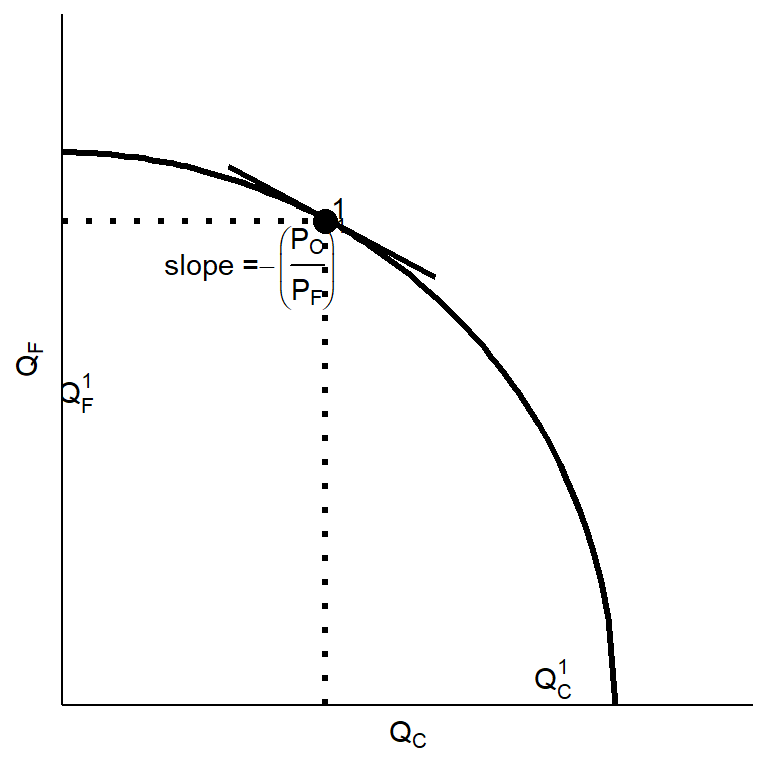
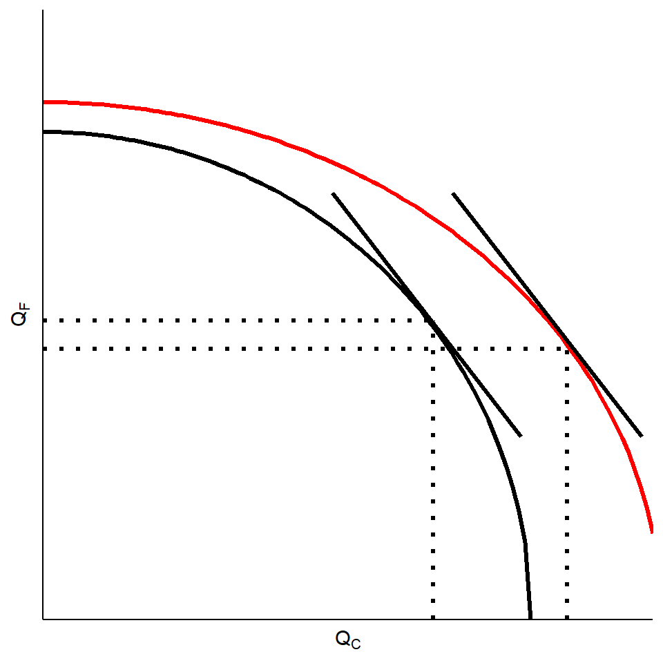
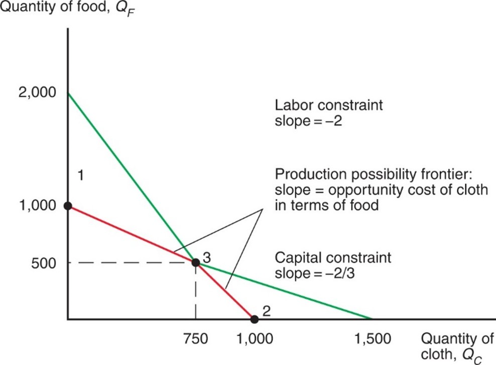

ECES905205 pertemuan 4
2022-09-12
Different in tech create comparative advantage:
Ricardian: pure specialization, everybody happy.
Specific factor: winner and loser, but overall optimal.
same tech -> not trade
Or is it?
Even if countries has the same tech/opportunity cost, difference in relative abundance of resources can still drive trade.
Here, we also show how different relative factor intensity drives trade.
Also will discuss factor price equalization and income distribution.
\(a_{i,j}\) are the number of factor \(i\) used by industry \(j\) to make 1 unit of good \(j\).
We still have diminishing return like specific factor model.
This time though, we can add \(K\), unlike specific factor model.
long run model: capital and labor can move between sectors.

Without substitution, the production possibilities will be a minimum of 2 straight lines. (see appendix)
\[ \frac{a_{LC}}{a_{KC}} > \frac{a_{LF}}{a_{KF}} \\ \frac{L_C}{K_C} > \frac{L_F}{K_F} \]
\[ \frac{\frac{\partial Q}{\partial K}}{\frac{\partial Q}{\partial L}}=\frac{r}{w} \rightarrow \frac{L}{K}=\omega \left(\frac{w}{r}\right) \] \(\frac{MP_L}{MP_K} \propto \frac{L}{K} \propto \frac{w}{r} \propto \frac{P_C}{P_F}\)
\[ c_j=wa_{Lj}+ra_{Kj} \]
\[ a_{Kj}=\left(\frac{c}{r}\right)-\left(\frac{w}{r}\right)a_{Lj} \] - Pilihan input akan berdasarkan isocost ini, di mana industri akan memilih kombinasi cost termurah.
Jika pasarnya kompetitif, maka harga barang = costnya (ga ada mark-up)
F>0 artinya: \[ P_F=a_{LF}(.)w+ a_{KF}(.)r \\ P_C=a_{LC}(.)w+ a_{KC}(.)r \]
Di mana \(a_{ij}(.)\) merupakan jumlah kapital dan buruh per unit yang dipilih berdasarkan optimasi.
full employment berarti semua kapital dan buruh dipakai dalam produksi (ga ada yg nganggur)
artinya:
\[ L=a_{LF}(.)F+a_{LC}(.)C \\ K=a_{KF}(.)F+a_{KC}(.)C \]
if the relative price of a good increases, then the real factor price used intensively in the production of that good increases, while the real price of the other factor decreases.
Perubahan harga akan mempengaruhi distribusi pendapatan antara buruh dan pemilik kapital.
Misalnya \(\frac{P_C}{P_F} \uparrow\) (labor intensive):
\[ P_F=a_{LF}(.)w+ a_{KF}(.)r \\ P_C=a_{LC}(.)w+ a_{KC}(.)r \]
Lakukan total differentiation. karena \(a_{ij}(.)\) dipilih secara optimal, maka perubahan kecil di harga tidak akan berpengaruh.
\[ dP_F=a_{LF}(.)dw+ a_{KF}(.)dr \\ dP_C=a_{LC}(.)dw+ a_{KC}(.)dr \]
\[ \frac{dP_F}{P_F}=\frac{a_{LF}(.)}{P_F}dw+ \frac{a_{KF}(.)}{P_F}dr \\ \frac{dP_C}{P_C}=\frac{a_{LC}(.)}{{P_C}}dw+ \frac{a_{KC}(.)}{P_C}dr \] - kali dengan \(\frac{w}{w}\) dan \(\frac{r}{r}\)
\[ \frac{dP_F}{P_F}=\frac{a_{LF}(.)w}{P_F}\frac{dw}{w}+ \frac{a_{KF}(.)r}{P_F}\frac{dr}{r} \\ \frac{dP_C}{P_C}=\frac{a_{LC}(.)w}{{P_C}}\frac{dw}{w}+ \frac{a_{KC}(.)r}{P_C}\frac{dr}{r} \]
maka:
\[ \hat{P_F}=\theta_{LF}\hat{w}+\theta_{KF}\hat{r} \\ \hat{P_C}=\theta_{LC}\hat{w}+\theta_{KC}\hat{r} \]
Misalnya harga cloth naik (\(\hat{P_C}>0\)) tapi harga food tetap (\(\hat{P_F}=0\))
\[ 0=\theta_{LF}\hat{w}+\theta_{KF}\hat{r} \\ \hat{P_C}=\theta_{LC}\hat{w}+\theta_{KC}\hat{r} \]
dapat dipastikan bahwa salah satu factor price harus naik dan satunya lagi pasti turun.
Ingat bahwa C itu cenderung labor intensif. artinya:
\[ \frac{\theta_{LF}}{\theta_{KF}}<\frac{\theta_{LC}}{\theta_{KC}} \]
Artinya, “bobot” yang diberikan untuk \(\hat{w}\) lebih tinggi di \(C\) daripada di \(F\). Krn \(\hat{P_C}>0\), maka dapat dipastikan \(\hat{w}>0\) dan \(\hat{r}<0\).
\[ \hat{w} > \hat{P_C} > 0 > \hat{r} \]
Jika harga output tidak berubah dan salah satu faktor produksi bertambah jumlahnya, maka produksi dari barang yang intensif diproduksi oleh faktor tersebut akan meningkat, dan produksi barang yang intensif faktor lainnya akan berkurang.
Dengan kata lain, jumlah faktor yang melimpah akan mempengaruhi produksi dan distribusi pendapatan.

\[ \hat{L}=\lambda_{LF}\hat{F}+\lambda_{LC}\hat{C} \\ \hat{K}=\lambda_{KF}\hat{F}+\lambda_{KC}\hat{C} \]
\[ \hat{L}=\lambda_{LF}\hat{F}+\lambda_{LC}\hat{C} \\ 0=\lambda_{KF}\hat{F}+\lambda_{KC}\hat{C} \] - Karena C labor intensif, maka \(\frac{\lambda_{LC}}{\lambda_{KC}}>\frac{\lambda_{LF}}{\lambda_{KF}}\)
\[ \hat{C}>\hat{L}>0>\hat{F} \]
The country that is abundant in a factor exports the good whose production is intensive in that factor
secara umum:
Countries tend to export goods whose production is intensive in factors with which the countries are abundantly endowed.
see Alan Deardorff “the general validity of the Hecksher-Ohlin theorem.”
Di home, perdagangan sangat menguntungkan bagi buruh karena mereka bisa ekspor (\(P_C>P_C^*\)) dan bisa konsumsi makanan dengan harga lebih murah (\(P_F>P_F^*\))
Sebaliknya, di foreign, trade menguntungkan pemilik kapital.
Owners of a country’s abundant factors gain from trade, but owners of a country’s scarce factors lose
hasil ini serupa dengan specific factor model: pemilik faktor yang mengalami kompetisi impor merugi.
insight dari H-O mengatakan bahwa winner-loser ini akan ada bahkan di long-run.
Bagaimana dengan Indonesia?
factor intensity in Indonesia (Amiti and Konings 2007 “Trade Liberalization, Intermediate Inputs, and Productivity: Evidence from Indonesia”)
pada kenyataannya, faktor tidak hanya dua.
Kapital, labor skilled dan unskilled, land, natural resources, dan lain sebagainya.
H-O memberi gambaran bahwa bahkan jika dua negara memiliki teknologi yang sama persis, perbedaan resources akan membuat mereka trade.
Teori H-O agak sulit dibuktikan. Evidencenya ga banyak.
In terms of US: harga skilled labor di mexico naik lebih cepat dari unskilled labor.
penjelasan: ada perubahan teknologi yang lebih ngaruh daripada trade.
Production constraint will be similar with Ricardian economy, except this time we have 2 constraints: Labor (L, same as ricardian), and Capital (K).
let \(a_{ij}\) be the amount of factor \(i\) used to produce 1 unit of product \(j\), while \(K\) and \(L\) are constant.
\[ a_{KC}Q_C+a_{KF}Q_F \le K \\ a_{LC}Q_C+a_{LF}Q_F \le L \]
Suppose use a fixed mix of capital and labor in each sector.
\(a_{KC}=2\), capital used to produce one yard of cloth
\(a_{LC}=2\), labor used to produce one yard of cloth
\(a_{KF}=3\), capital used to produce one calorie of food
\(a_{LF}=1\), labor used to produce one calorie of food
\(L=2000\) while \(K=3000\).
Constraint on capital that capital used cannot exceed supply for the numerical example:
\[ 2Q_C+3Q_F \le 3000 \]
Constraint on labor that labor used cannot exceed labor supply:
\[ 2Q_C+QF\le 2000 \]
If capital cannot be substituted for labor or vice versa, the production possibility frontier in the factor-proportions model would be defined by two resource constraints: The economy can’t use more than the available supply of labor (2,000 work-hours) or capital (3,000 machine-hours). So the production possibility frontier is defined by the red line in this figure.

The opportunity cost of producing one more yard of cloth, in terms of food, is not constant:
low (\(\frac{2}{3}\)) when the economy produces low amount of cloth relative to food.
high (2 in the example) when the economy produces high amount of cloth relative to food.
Why? Because when the economy devotes more resources towards production of one good, the marginal productivity of those resources tends to be low so that the opportunity cost is high.
The above P P F equations do not allow substitution of capital for labor in production.
If producers can substitute one input for another in the production process, then the P P F is curved (bowed).
Opportunity cost of cloth increases as producers make more cloth.
similar as specific factor model.